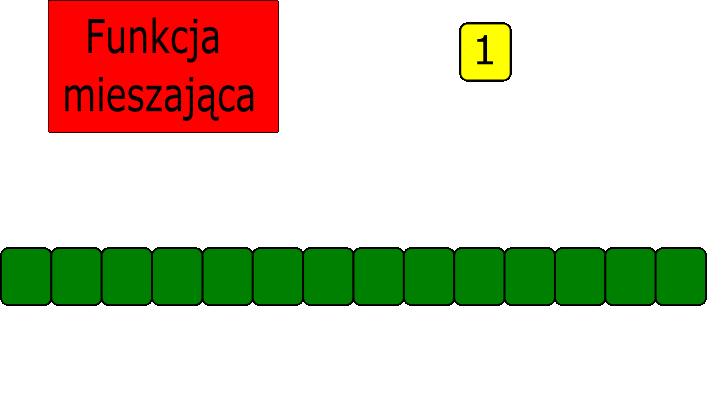

Wstęp
Tablica mieszająca struktura danych która opiera się na tablicy. Jej cechą jest funkcja mieszająca.
Oblicza ona z danego klucza w jakim indeksie tablicy znajdzie się klucz.
Problemy tej struktury danych to(wpływają na złożoność obliczeniową):
- sama funkcja mieszająca, jej wzór, jej złożoność itp. Musi ona być dostosowana do zbioru danych które będziemy przypisywac do tablicy.
Przykładowo funkcja licząca klucz w postaci inta, nie policzy będzie odpowiednia do policzenia indeksu zbioru danych gdzie klucz bedzie np. stringiem.
- Kolizja, co ma zrobić struktura w momencie kiedy wyliczony indeks jest już zajęty?
"Dobra" funkcja mieszająca powinna być:
- łatwo obliczalna, o niskiej złożoności obliczeniowej.
- losowa, czyli wylosowanie każdego indeksu ma takie samo prawdopodobieństwo
oraz funkcja nie jest monotoniczna(tendencyjna, dająca przewidywalne wyniki).


Wstawianie
W pierwszym kroku operacji wyszukiwania, obliczyć za pomocą funkcji mieszającej H() związany z kluczem k indeks: h = H(k),
w drugim kroku - co jest konieczne - sprawdzić, czy element o kluczu k jest rzeczywiście wskazywany przez indeks h w tablicy A,
tj. sprawdzić, czy A[H(k)].klucz = k
w przypadku błędnego wyznaczenia adresu obiektu, należy w większości metod implementacji tablicy mieszającej wyznaczył indeks alternatywny h',
ponownie sprawdzić, czy wskazuje on poszukiwany obiekt, zaś w przypadku niepowodzenia wyznaczyć olejny indeks h'', itd.
Najprościej mówiąc, funkcja mieszająca zwraca indeks pod którym zapisujemy dany obiekt.
Problem pojawia się gdy dla dwóch lub wiecej elementów indeks zostanie wyliczony ten sam.
W tym momencie jest problem i nazywa się go kolizją.
Kolizja
Rozwiązań kolizji jest kilka.
1. Metoda łańcuchowa - Tworzymy tablicę 2D lub tablice zawierającą listę. W momencie kolizji dodajemy do listy pod danym indeksem kolejny obiekt.
2. Adresowanie liniowe - w momencie kolizji wstawiany obiekt jest przypisywany do pierwszego wolnego indeksu za zajętym.
Tworzą się w ten sposób grupy które powodują że prawdopodobieństwo wylosowania danego miejsca w tablicy nie jest równomierne.
3. Mieszanie podwójne - są dwie funkcje mieszające jedna wylicza indeks, a druga w przypadku kolizji wylicza nowe miejsce.
Dodawanie z kolizją - rozwiązanie metodą łańcuchową.

Usuwanie
Usuwanie zaczynamy od znalezienia elementu który chcemy usunąć.
Odbywa się dość prosto jeśli szukamy po kluczu. W tym wypadku funkcja mieszająca po prostu zwraca nam indeks, pod którym znajduje się objekt z danym kluczem.
W innym przypadku trzeba by przeiterować całą tablicę, jak przy liście jednokierunkowej.
Po znalezieniu elementu usuwamy go.
Na podstawie:
Prezentacja G, mgr Włodzimierza Chocianowicza